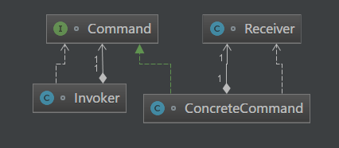

原文出处:本文由博客园博主知了一笑提供。
原文连接:https://www.cnblogs.com/cicada-smile/p/11885115.html
原文连接:https://www.cnblogs.com/cicada-smile/p/11885115.html
本文源码：GitHub·点这里 || GitEE·点这里
一、生活场景
1、场景描述
智能电脑的品牌越来越多，由此诞生了一款电脑控制的APP，万能遥控器，用户在使用遥控器的时候，可以切换为自家电视的品牌，然后对电视进行控制。
2、代码实现
public class C01_InScene {
public static void main(String[] args) {
TVClient tvClient = new TVClient() ;
Remote remote = new RemoteApp(tvClient) ;
UserClient userClient = new UserClient(remote) ;
userClient.action("HM","换台");
}
}
/**
* 遥控接口
*/
interface Remote {
void controlTV (String tvType,String task);
}
/**
* 遥控器APP
*/
class RemoteApp implements Remote {
private TVClient tvClient = null ;
public RemoteApp (TVClient tvClient){
this.tvClient = tvClient ;
}
@Override
public void controlTV(String tvType, String task) {
tvClient.action(tvType,task);
}
}
/**
* 用户端
*/
class UserClient {
// 持有遥控器
private Remote remote = null ;
public UserClient (Remote remote){
this.remote = remote ;
}
public void action (String tvType, String task){
remote.controlTV(tvType,task);
}
}
/**
* 电视端
*/
class TVClient {
public void action (String tvType, String task){
System.out.println("TV品牌："+tvType+";执行："+task);
}
}二、命令模式
1、基础概念
命令模式属于对象的行为模式。命令模式把一个请求或者操作封装到一个对象中。把发出命令的动作和执行命令的动作分割开，委派给不同的对象。命令模式允许请求的一方和接收的一方独立开来，使得请求的一方不必知道接收请求的一方的接口，更不必知道请求是怎么被接收，以及操作是否被执行。
2、模式图解

3、核心角色
- 命令角色
声明所有具体命令类的抽象接口。
- 具体命令角色
定义接收者和行为之间的交互方式：实现execute()方法，调用接收者的相应操作 , 传递命令信息。
- 请求者角色
负责调用命令对象执行请求，相关的方法叫做行动方法。
- 接收者角色
执行请求。任何一个类都可以成为接收者，执行请求的方法叫做行动方法。
4、源码实现
public class C02_Command {
public static void main(String[] args) {
Receiver receiver = new Receiver();
Command command = new ConcreteCommand(receiver);
Invoker invoker = new Invoker(command);
invoker.action("卧倒");
}
}
/**
* 命令角色
*/
interface Command {
// 执行方法
void execute(String task);
}
/**
* 具体命令角色类
*/
class ConcreteCommand implements Command {
//持有相应的接收者对象
private Receiver receiver = null;
public ConcreteCommand(Receiver receiver){
this.receiver = receiver;
}
@Override
public void execute(String task) {
//接收方来真正执行请求
receiver.action(task);
}
}
/**
* 请求者角色类
*/
class Invoker {
// 持有命令对象
private Command command = null;
public Invoker(Command command){
this.command = command;
}
// 行动方法
public void action(String task){
command.execute(task);
}
}
/**
* 接收者角色类
*/
class Receiver {
// 执行命令操作
public void action(String task){
System.out.println("执行命令："+task);
}
}三、Spring框架应用
Spring框架中封装的JdbcTemplate类API使用到了命令模式。
1、JdbcOperations接口
public interface JdbcOperations {
@Nullable
<T> T execute(StatementCallback<T> var1) ;
}2、JdbcTemplate类
这里只保留模式方法的代码。
public class JdbcTemplate implements JdbcOperations {
@Nullable
public <T> T execute(StatementCallback<T> action) {
try {
T result = action.doInStatement(stmt);
} catch (SQLException var9) {
} finally {
}
}
}3、StatementCallback接口
@FunctionalInterface
public interface StatementCallback<T> {
@Nullable
T doInStatement(Statement var1) ;
}四、命令模式总结
- 松散的耦合
命令模式使得命令发起者和命令执行者解耦，发起命令的对象完全不知道具体实现对象是谁。这和常见的MQ消息队列原理是类似的。
- 动态的控制
命令模式把请求封装起来，可以动态地对它进行参数化、队列化和等操作和管理，使系统更加的灵活。
- 良好的扩展性
命令发起者和命令执行者实现完全解耦，因此扩展添加新命令很容易。
五、源代码地址
GitHub·地址
https://github.com/cicadasmile/model-arithmetic-parent
GitEE·地址
https://gitee.com/cicadasmile/model-arithmetic-parent：命令模式1.png)